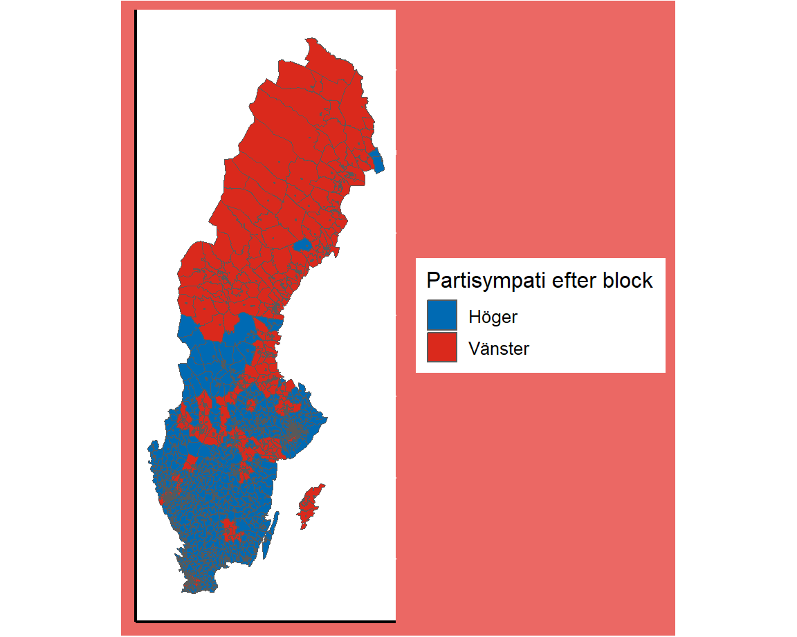

Svensk statistik är ett initiativ taget av William Lind med
det huvudsakliga syftet att visualisera utvecklingen i Sverige utifrån
ett antal parametrar. Genom SCB är Sverige ett land som ligger i
framkant i att lagra registerdata och föra annan statistik på
befolkningsnivå, men denna statistik är inte alltid så enkel att ta till
sig. Detta är ett försök att förenkla möjligheten att ta till sig av
denna data.
I denna rapport bemöts området Demokrati utifrån
dessa områden:
- Val: Valdeltagande och
valresultat över tid.
- Partisympatier:
Partisympatier utifrån kön, ålder, utbildningsnivå, inkomst och
bakgrund.
- Förtroendevalda: Förtroendevalda
utifrån kön, ålder, utbildningsnivå, inkomst och bakgrund.
Använd navigationspanelen högst upp för att se svaren utifrån olika
områden. Får figurerna inte plats på sidan? Testa att zooma ut genom
att hålla in Ctrl + -.

SENASTE VALET, STAPELDIAGRAM DODGE, ÅLDERSKATEGORIERNA
TIDSLINJE MED UPPDELNING VÄNSTER/HÖGER DÄR 50/50 RÖSTER. 0 = 100 % RÖSTAR VÄNSTER, 100 = 100 % RÖSTAR HÖGER. EN LINJE PER ÅLDERSKATEGORI
SENASTE VALET, STAPELDIAGRAM STACKED, SEPARATA FÄRGER FÖR ÅLDERSKATEGORI + KÖN. WAFFLE CHART?
SENASTE VALET, STAPELDIAGRAM DODGE, UTBILDNINGSBAKGRUND
TIDSLINJE MED UPPDELNING VÄNSTER/HÖGER DÄR 50/50 RÖSTER. 0 = 100 % RÖSTAR VÄNSTER, 100 = 100 % RÖSTAR HÖGER. EN LINJE PER KATEGORI
SENASTE VALET, STAPELDIAGRAM STACKED, SEPARATA FÄRGER FÖR VARJE KATEGORI + KÖN. WAFFLE CHART?
SENASTE VALET, STAPELDIAGRAM DODGE, INKOMSTPERCENTIL
TIDSLINJE MED UPPDELNING VÄNSTER/HÖGER DÄR 50/50 RÖSTER. 0 = 100 % RÖSTAR VÄNSTER, 100 = 100 % RÖSTAR HÖGER. EN LINJE PER KATEGORI
SENASTE VALET, STAPELDIAGRAM STACKED, SEPARATA FÄRGER FÖR VARJE KATEGORI + KÖN. WAFFLE CHART?
SENASTE VALET, STAPELDIAGRAM DODGE, SVENSK/UTLÄNDSK BAKGRUND
TIDSLINJE MED UPPDELNING VÄNSTER/HÖGER DÄR 50/50 RÖSTER. 0 = 100 % RÖSTAR VÄNSTER, 100 = 100 % RÖSTAR HÖGER. EN LINJE PER KATEGORI
SENASTE VALET, STAPELDIAGRAM STACKED, SEPARATA FÄRGER FÖR VARJE KATEGORI + KÖN. WAFFLE CHART?